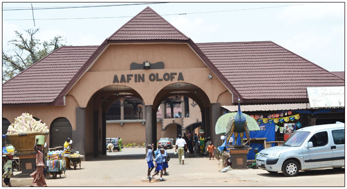

Visit Offa
Come and experience the rich culture and tradition of the ancient city of Offa
Welcome to Offa!The city with a population of about 120,000 people, located in the north-central state of kwara,Nigeria. A city noted for for it's weaving and dying trade. The ancient tradition of Offa is also known for wrestling
Top sites to visit in Offa

Visit the central Mosque
Meet the current Olofa of Offa,His Royal Majesty, Oba Mufutau Muhammed Oloyede Gbadamosi, Okikiola Ajagungbade I Esuwoye II hails from Anilelerin Ruling House Offa